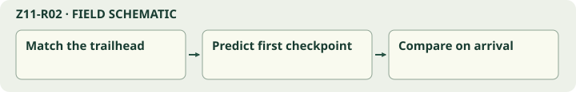

Z11-R02 · Navigation reconstruction
Confirm the starting point and first checkpoint
Establish one map-to-ground match before leaving the trailhead.
Lineage · B014 reconstruction · continuation of r01
When it applies · A planned trip using a paper or offline map and a marked route.
Equipment · Current map, trip plan and another reader to cross-check when available.

Actions
- Identify the trailhead on the map and match its name or another reliable feature to the location.[E01, ED]
- Identify the first decision point, such as a signed junction. Agree on what you expect to see before you proceed.[E01, T06, ED]
- If the expected feature does not appear, stop and compare the last verified point with the actual surroundings. Avoid continuing just to find a matching landmark.[T06, ED]
Verify · Both the start and first checkpoint can be described in a way another party can use.[ED]
Stop or change course · If the start or route is uncertain, revise the plan before leaving known ground.[E01, T06, ED]
Evidence and editorial notes
- E01 · Minnesota DNR · Safety in State Forests
- Before your trip and while visiting · state-forest travel
Know the route, check conditions, carry navigation and safety equipment and share trip details.
Primary source · checked 2026-11-24 - T06 · NPS · Outdoor Emergency Plan
- If you get lost or hurt; call for help · Outdoor US emergency
Communicate location, last known point, situation and needs. Stay put when unable to establish a safe route unless immediate danger requires movement.
Primary source · checked 2026-11-24
Source lineage · B014 reconstruction · continuation of r01.